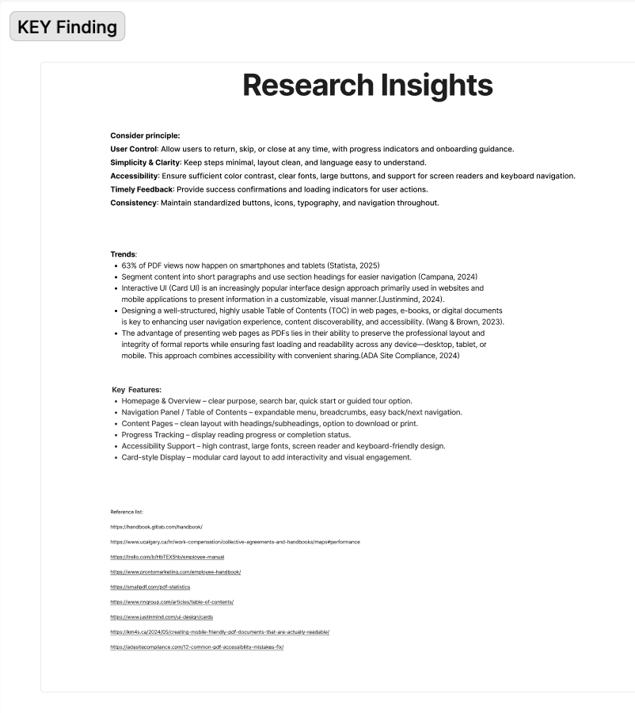
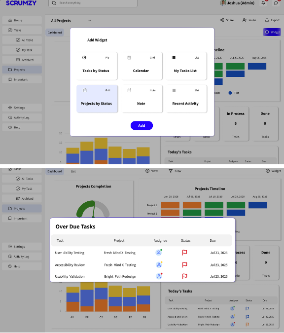
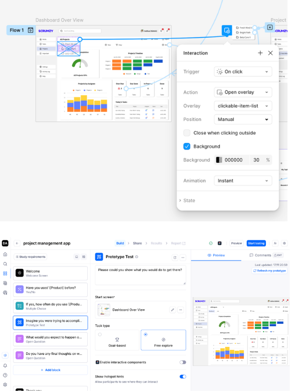

Project Management App - Dashboard Design
Core Competencies Applied
Competitor Auditing
Analyzed industry-standard tools (Trello, Monday, Asana) to identify functional gaps and UX best practices for task management.
User Flow Mapping
Defined the logical journey from initial task entry to cross-project tracking to ensure a seamless navigation experience.
Information Hierarchy
Developed low-fidelity layouts to prioritize critical data points, ensuring users can grasp project status at a glance.
Design System Architecture
Built a comprehensive library of reusable components, including cards, charts, and widgets, with a unified grid and color system.
High-Fidelity Prototyping
Created interactive Figma prototypes to demonstrate advanced features like dynamic project switching and status visualization.
Usability Test Planning
Structured peer testing sessions to evaluate navigation clarity and task completion efficiency within the dashboard ecosystem.
Visual Journey





